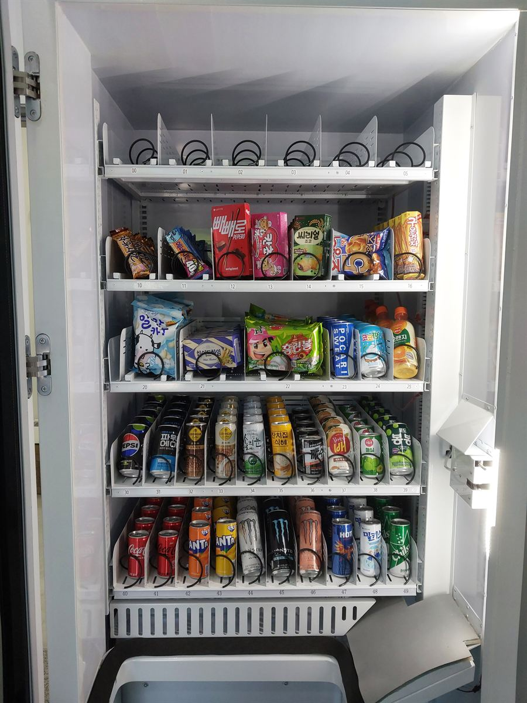

금천구 무인자판기 설치 완료 — 지식산업센터 휴게실에 과자·음료 한 대

"음료 자판기 놓을까, 과자 자판기 놓을까" 하고 고민하시는 분이 많습니다. 답은 대개 둘 다 한 대에입니다. 위 사진은 문을 연 상태의 기계 안쪽인데, 칸이 50개 있고 위쪽 두 단은 과자·컵라면, 아래쪽 두 단은 캔·페트 음료로 나눠 담았습니다. 두 대를 놓을 자리도, 두 대 값도 필요 없습니다.
어떻게 구성했나
칸마다 번호가 붙어 있는 게 사진에도 보입니다. 10번대·20번대는 과자, 30번대·40번대는 음료로 층을 갈랐습니다. 이렇게 나누면 이용하는 분이 "달달한 건 위, 마실 건 아래"로 외우게 돼서 화면 앞에서 헤매지 않습니다.
같은 과자라도 봉지와 상자를 섞어 넣었습니다. 봉지 과자는 눌리면 안 되니 스프링 간격을 넓게 주고, 상자 과자는 좁게 줘서 한 칸에 더 많이 들어가게 합니다. 음료 쪽은 캔과 페트를 같은 칸에 섞지 않는 게 중요합니다. 굵기가 다르면 걸려서 안 떨어집니다. 맨 위 00~05번 여섯 칸은 일부러 비워 뒀습니다. 한 달쯤 팔아 보고 어느 쪽이 빨리 나가는지 본 다음, 그 품목을 여기에 더 깔면 됩니다. 처음부터 꽉 채우는 것보다 이렇게 여유를 두는 편이 결국 덜 힘듭니다.
앱으로 원격 관리, 설치는 반나절
칸이 50개면 "뭐가 떨어졌는지" 일일이 기억할 수가 없습니다. 그래서 앱에 칸 번호별 남은 수량이 그대로 뜹니다. 23번이 0이면 그것만 챙겨 가면 되고, 굳이 매일 들여다볼 필요도 없습니다. 팔린 내역도 품목별로 쌓이니, 석 달쯤 지나면 안 나가는 품목이 눈에 보입니다. 그 칸만 다른 걸로 바꾸는 게 운영의 거의 전부입니다.
결제는 카드·삼성페이·카카오페이·네이버페이·QR을 받고 현금은 쓰지 않습니다. 동전이 없으니 잔돈을 채울 일도, 수금하러 갈 일도 없습니다. 설치는 콘센트 하나와 기계가 들어갈 만한 문 폭이면 되고, 자리 잡고 상품 채우고 시험 결제까지 반나절이면 끝납니다.
구매·임대·렌탈 모두 가능
회사에서 복지로 두시는 경우라면 오래 쓸 물건이니 구매가 깔끔합니다. 직접 운영해 보실 생각이면 임대·렌탈로 월 비용만 내면서 시작하셔도 되고, 자리만 내주고 채우는 일까지 맡기는 방식도 있습니다. 어느 쪽이든 설치비는 무료이고 세금계산서가 나옵니다. 상주 인원이 몇 명인지, 근처에 편의점이 얼마나 가까운지만 알려 주시면 한 대로 될지 두 대가 나을지 같이 따져 드립니다.
금천구 무인자판기 상담은 무료
가산동의 지식산업센터 밀집 구역과 독산동·시흥동까지 금천구 전역에 방문합니다. 가산디지털단지역·독산역·금천구청역 주변 건물은 층마다 사무실이 들어차 있는데 매점이 없는 곳이 많아, 사진처럼 과자와 음료를 한 대에 담는 구성이 잘 맞습니다. 사무실 휴게실 말고도 공장 탈의실·학원 복도·병원 보호자 대기실·스터디카페·체육관 로비처럼 사람은 머무는데 살 데가 없는 자리라면 어디든 됩니다. 놓을 자리를 직접 보고 기계 크기와 칸 구성까지 같이 잡아 드리며, 상담과 견적은 무료입니다.
※ 사진은 H포스가 시공한 설치 사례이며, 글에 적힌 지역의 현장 사진은 아닙니다.
📞 금천구 무인자판기 설치 상담 010-6832-1994